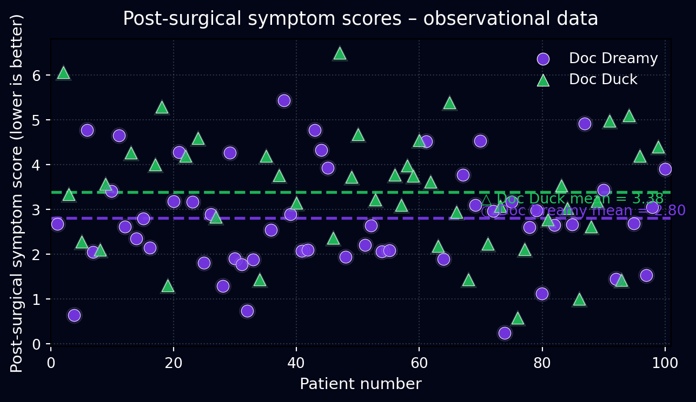
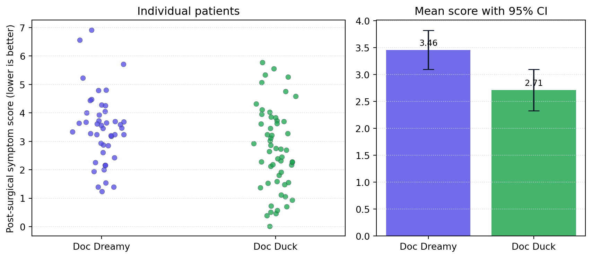
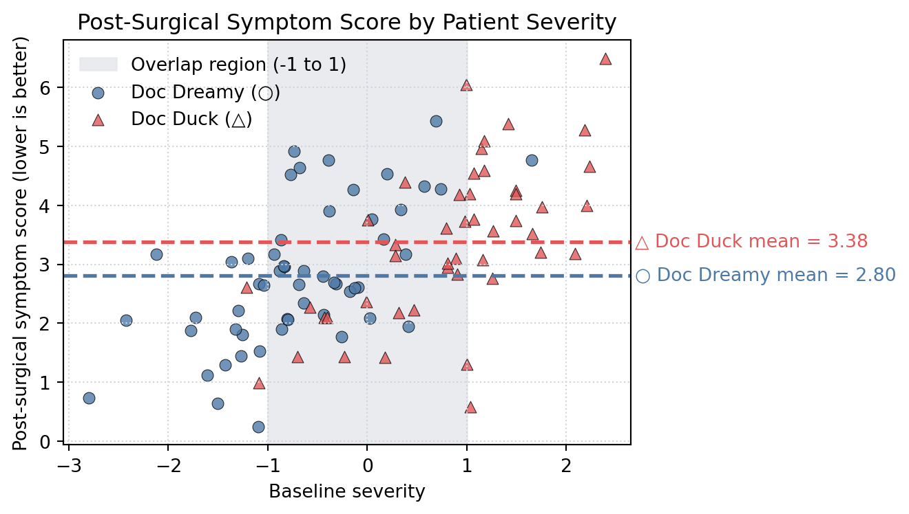

| doctor_name | n | mean_score | std_score | mean_severity | |
|---|---|---|---|---|---|
| 0 | Doc Dreamy | 54 | 2.80 | 1.18 | -0.67 |
| 1 | Doc Duck | 46 | 3.38 | 1.33 | 0.85 |
Using Randomization & Stratification to Overcome a Common Cause Confounder
Doc Dreamy vs Doc Duck
1 Story Setup: Two Surgeons, Very Different Looks

Imagine you need surgery and you can choose between two surgeons at the same hospital.
- Doc Dreamy looks exactly how people expect a surgeon to look. Calm, polished, nice office, diplomas on the wall.
- Doc Duck looks rough. Bigger build, messy office, and not much on the walls.
Most people would feel safer picking Doc Dreamy. But looks can hide what is really going on in the data. Here we walk through data for these two doctors and see how a hidden factor can flip the story.
2 Data and Notation
We work with two data sets:
- Observational data: patients picked their surgeon based on real-world factors like looks, waiting time, and personal preference.
- Randomized data: patients were assigned to surgeons by something like a coin flip.
The main outcome is:
post_surgical_score– symptom score after surgery (lower values mean better recovery).
We also have:
severity– how serious the case was before surgery.doctor_name–"Doc Dreamy"or"Doc Duck".
3 Observational Data: First Impression Favors Doc Dreamy
In the observational data, patients did not get assigned randomly. They chose a surgeon based on what they saw and how urgent they felt their case was.
3.1 Summary of Observational Outcomes
In this setting, Doc Dreamy has the lower average post-surgical score, so at first glance it looks like he is doing better. But this conclusion is based on raw averages only.
3.2 Figure 1 – Observational Outcomes by Patient

Looking only at this figure and the earlier summary, the obvious answer is:
Doc Dreamy looks better in the observational data because his patients have lower scores on average.
But this ignores how patients ended up with each surgeon.


5 Breaking the Link: Randomized Assignment
One way to break the connection between severity and surgeon choice is to assign surgeons at random.

In the randomized data, surgeon assignment no longer depends on severity. This lets us see the effect of surgeon identity more directly.
5.1 Summary of Randomized Outcomes
| doctor_name | n | mean_score | std_score | mean_severity | |
|---|---|---|---|---|---|
| 0 | Doc Dreamy | 45 | 3.46 | 1.24 | 0.04 |
| 1 | Doc Duck | 55 | 2.71 | 1.45 | 0.23 |
Here the story changes. The randomized summary shows which surgeon tends to have the better outcomes once the severity imbalance has been removed.
5.2 Figure 2 – Randomized Outcomes by Patient

In this figure, the average lines tell a different story than before. Once surgeon assignment is separated from severity, the advantage seen in the observational data can disappear or reverse.
Randomization answers the question:
If two groups of patients with similar severity are assigned to surgeons by chance, who does better on average?
6 When Randomization Is Not Possible: Stratification by Severity
In many real settings we cannot randomize who gets which treatment. A common plan in that case is to compare outcomes within bands of severity so that we are comparing people who started in roughly the same state.
Here we look at initial severity on the x-axis and post-surgical score on the y-axis, using the observational data.
6.1 Figure 3 – Outcomes by Severity (Stratified View)

Inside the shaded band between -1 and 1 on the x-axis, both surgeons have a good number of patients. This is the best place to compare them fairly using the observational data.
6.2 Summary Inside the Overlap Band
| doctor_name | n | mean_score | std_score | mean_severity | |
|---|---|---|---|---|---|
| 0 | Doc Dreamy | 35 | 3.23 | 1.01 | -0.30 |
| 1 | Doc Duck | 21 | 2.94 | 1.13 | 0.32 |
Now the comparison is made for patients who started with similar severity. This reduces the bias from the common cause and gives a fairer comparison.
Within this overlap band, Doc Duck often looks stronger than the raw overall averages suggest.
7 Main Lessons
- Raw averages can mislead. In the observational data, Doc Dreamy looks better at first only because he sees easier cases on average.
- Randomization breaks the path from severity to treatment. In the randomized data, assignment no longer depends on severity, so the difference in averages reflects the effect of the surgeons more directly.
- Stratification is a backup when randomization is not available. Comparing outcomes within bands of severity helps control the common cause and gives a fairer comparison.
The three figures and the summary tables together show:
- How a hidden variable (severity) can tilt the numbers.
- How randomization fixes the problem.
- How stratification can approximate that fix when randomization is not an option.